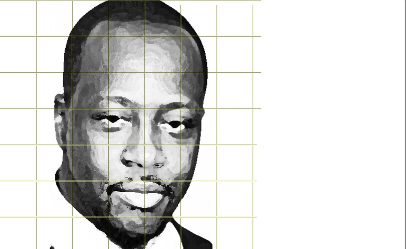
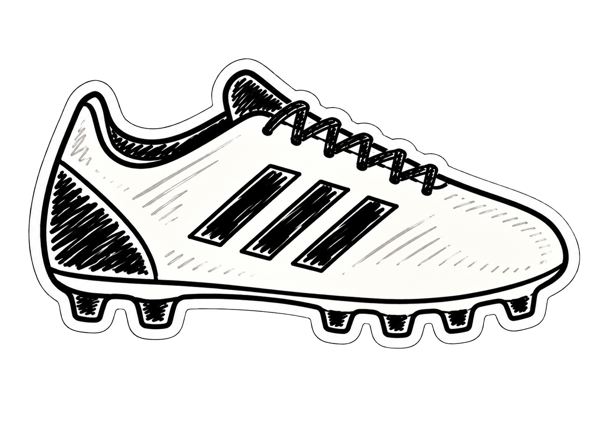

/ /
Wyclef
JEAN

NOM
Melchie Daëlle Dumornay

DATE DE NAISSANCE
17 août 2003

LIEU DE NAISSANCE
Mirebalais, Haïti

NATIONALITÉ
Haïtienne
Métier
⚽ Footballeuse professionnelle
Poste
Milieu offensif / Attaquante
Club
🔴 Olympique Lyonnais Féminin
Sélection
🇭🇹 Équipe nationale d'Haïti
Talents
Technique & créativité
Vitesse & dribble
Vision du jeu
Polyvalence offensive
Ce qui la distingue vraiment, c'est sa polyvalence offensive et sa maturité tactique très précoce — capable de marquer et de créer des occasions à un niveau mondial avant même ses 20 ans.
Débuts
Débuts dans le football en Haïti, très jeune, dans un contexte difficile.
Adolescence
Révélée au niveau international à l'adolescence — impressionne par sa maturité et sa technique hors norme.
Club à l'étranger
Passage remarqué en club à l'étranger, s'imposant face à des joueuses bien plus expérimentées.
Olympique Lyonnais
Rejoint l'Olympique Lyonnais Féminin, l'un des plus grands clubs de football féminin au monde.
Représente Haïti au plus haut niveau international.
Symbole de réussite pour la jeunesse haïtienne.
Met en lumière le football féminin haïtien sur la scène mondiale.
Elle incarne une partie de la culture haïtienne : la jeunesse, le sport et l'ambition internationale.

Qualité
Maturité exceptionnelle pour son âge

Engagement
Inspiration pour les jeunes filles en Haïti

Fait marquant
A joué au plus haut niveau mondial avant ses 20 ans
 Écouter un extrait
Écouter un extrait
Découvrez Melchie Daëlle Dumornay en action !
0:00 / 0:00
Gratitude à Ralph ALLEN